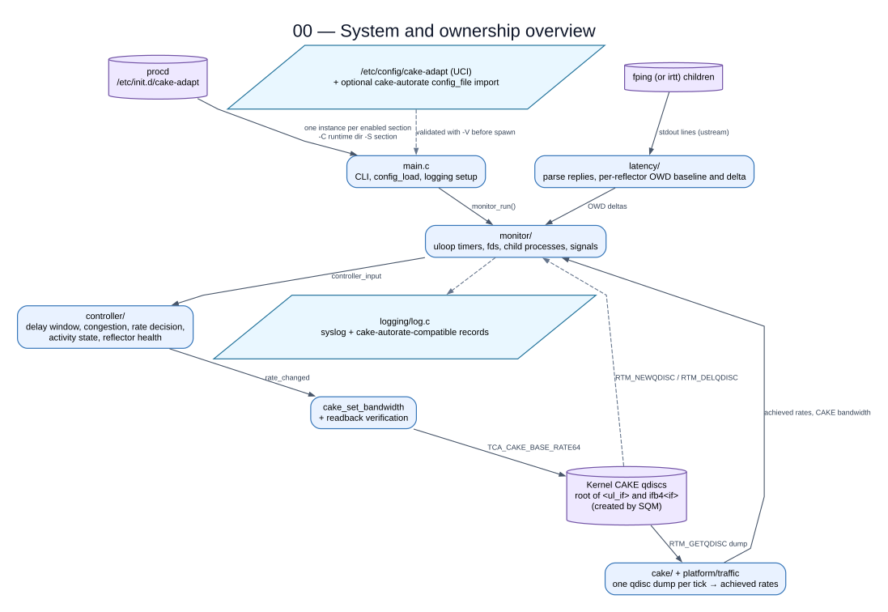

00 — System and ownership overview
files/cake-adapt.init:start_service:95 src/main.c:main:214 src/monitor/monitor.c:monitor_run:262 src/monitor/pingers.c:process_latency_line:137 src/monitor/control.c:control_update:345 src/cake/cake.c:cake_set_bandwidth:282
Important behavior and caveats
- The pipeline is measurement → controller decision → desired CAKE state → verified kernel update. Each stage lives in its own subsystem directory under src/.
- The upload direction is the configured interface; download is ifb4<interface>, truncated to the kernel interface-name limit. A complete ul_if/dl_if pair overrides both.
- fping is the default pinger. irtt is also implemented as a per-reflector child process.
- Every reflector reply runs the controller once, as in cake-autorate. The traffic timer only refreshes CAKE counters, achieved rates and activity state.